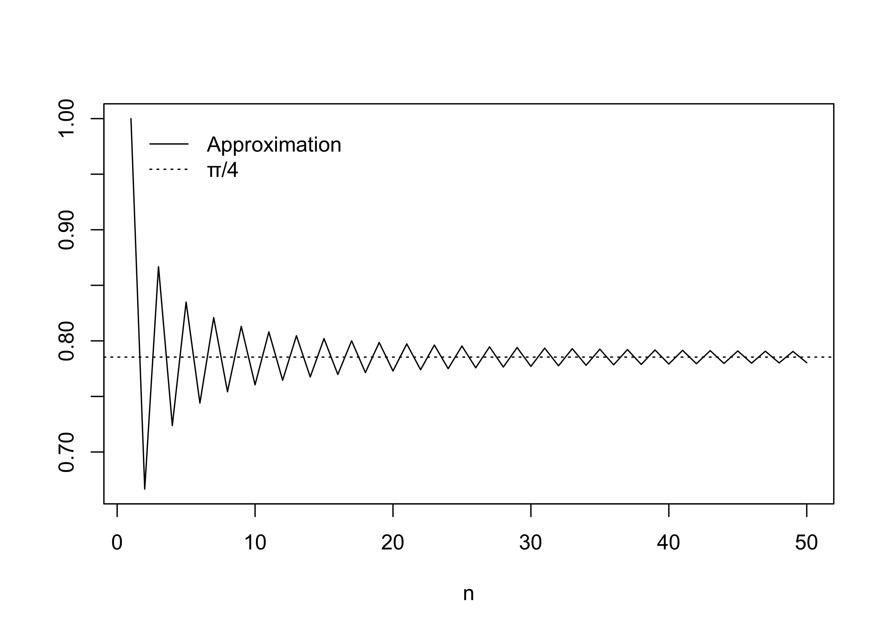
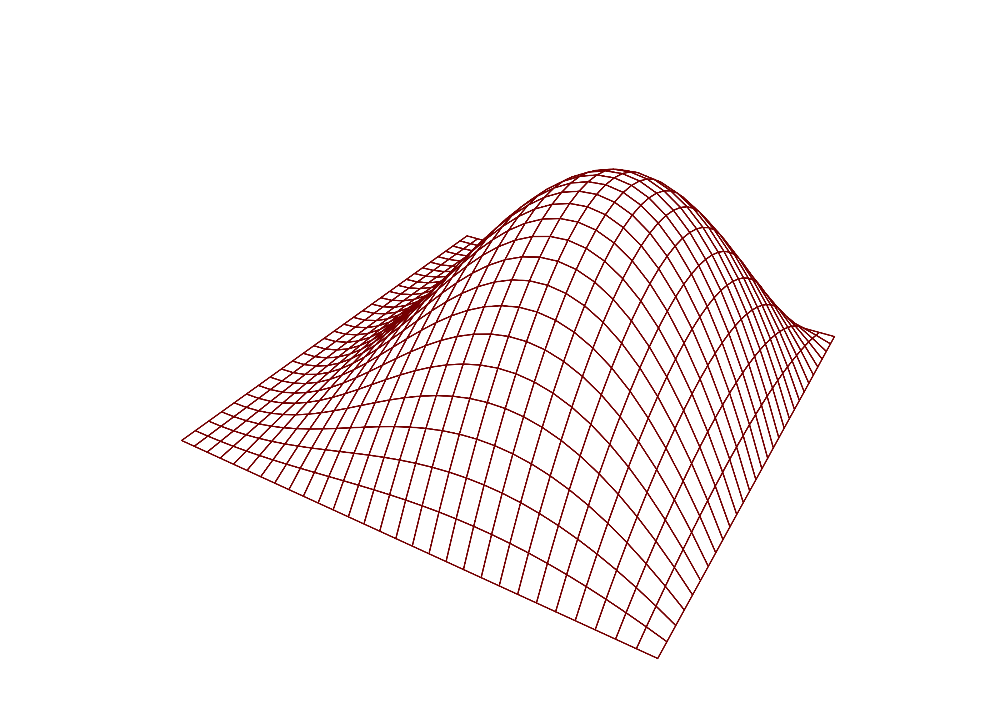

x <- c(0.5, 1.3, -1.7, 0.6, 0.1, -1.8, -0.5, -0.6, 0.6, 1.3)
sum(x)[1] -0.2$$
$$
The for loop is the bread and butter of the computer programmer! Very little can be accomplished without for loops, and knowing how to use them is essential to literacy in this, the Age of the Computer.
Think of the functions sum(), mean(), sd(), var(), min(), max(), and median(), which we have already introduced. These functions are all based on for loops; they have for loops running deep down inside of them some more efficient programming language like C or Fortran, which are closer to the very 0s and 1s of your computer machine than R is. R provides many functions designed to help us save time, so we don’t in practice have to roll up our sleeves and code loops to compute these simple statistics; however, it will be worthwhile to study how these functions depend on the for loop, as in the remainder of the course we will find many more applications of for loops.
Let’s start with the sum() function. This function takes a numeric vector and adds up all of its entries.
x <- c(0.5, 1.3, -1.7, 0.6, 0.1, -1.8, -0.5, -0.6, 0.6, 1.3)
sum(x)[1] -0.2Nice. But what is actually going on inside the function? Suppose we have to add up the entries in x. How would we do it? A typical brain would do it by adding them one at a time and keeping track of the cumulative sum. Well, this can be done with a for loop.
A for loop is a program which is executed a number of times making use of an index which is typically updated in each execution. Most often the index is an integer increasing by one after each execution.
In R the syntax of the for loop takes the form: for(<index> in <values>){<commands>}.
We can compute the sum of the entries in a numeric vector with a for loop in R as follows:
n <- length(x) # get the number of entries of x
val <- 0 # initialize the sum at 0
for(i in 1:n){
val <- val + x[i] # increment the sum by entry i of x
}
val[1] -0.2In the for loop above, the index i will begin at 1, then change to 2, then change to 3, and so on until it reaches n, the length of the vector x. For each value of i the command val <- val + x[i] is executed, so that after the last time, when the loop stops, val will be equal to the sum of the entries in x.
The index need not be integer-valued. Another way to perform the above is:
val <- 0
for(x0 in x){
val <- val + x0
}
val[1] -0.2It is more typical to use an integer valued index, so I personally prefer the first way of writing the loop (even though one needs first to ask for the length of the vector x).
Let’s put our loop inside a function:
my_sum <- function(x){
n <- length(x)
val <- 0
for(i in 1:n){
val <- val + x[i]
}
return(val)
}
my_sum(x)[1] -0.2If we want to define our own mean function, we just need to use our sum function:
my_mean <- function(x) my_sum(x) / length(x)
my_mean(x)[1] -0.02mean(x) # gives the same value[1] -0.02Some of the AI chatbots were recently struggling to answer the question of how many times the letter “r” occurred in the word “strawberry”. It appears to be fixed in ChatGPT now. Below is a for loop which counts this. It looks at each character and adds 1 to the count if the character is “r”:
ch <- "strawberry"
n <- nchar(ch) # get the number of characters in the string
nr <- 0 # start the count at zero
for(i in 1:n) nr <- nr + (substr(ch,i,i) == "r") # add 1 if character i is "r"
nr[1] 3Note that if the loop only executes one line of code in each iteration, we do not need to put the line in curly braces!
It turns out one can write \(\pi/4\) as \[ \frac{\pi}{4} = 1 - \frac{1}{3} + \frac{1}{5} - \frac{1}{7} + \dots \]
We can use a for loop to find the \(n\)th term in the sequence:
lpi <- function(n){ # lpi after Leibniz
val <- 0
for(i in 1:n) val <- val + (-1)^(i+1) / (2*i - 1)
return(val)
}
lpi(500)[1] 0.7848982pi/4[1] 0.7853982If we want to make a plot of the series to study its convergence, we can modify our function:
lpiseq <- function(n){ # lpi after Leibniz
val <- numeric(n)
val[1] <- 1
for(i in 2:n) val[i] <- val[i-1] + (-1)^(i+1) / (2*i - 1)
return(val)
}
plot(lpiseq(50),type = "l",xlab = "n",ylab = "")
abline(h = pi/4,lty = 3)
legend(x = 1,
y = 1,
legend = c("Approximation","\u03c0/4"),
lty = c(1,3),
bty = "n")
sapply() is just doing a for loopDo you recall our earlier struggle with having defined a function with conditional statements which could not be evaluated on a vector?
Here was one such case:
# some scores
scores <- c(75.7, 64.1, 88.4, 59.2, 86.9, 67.5, 83.8, 86.6, 73.1, 65.2)
# a function to decide whether a score is a pass or fail
pf <- function(score){
if(score >= 70){
val <- "pass"
} else {
val <- "fail"
}
return(val)
}We wanted to evaluate the pf() function on each entry of the vector scores, but we get
pf(scores)Error in if (score >= 70) {: the condition has length > 1because if() can only accept single values, not vectors.
Our solution had been to use the sapply() function in this situation to evaluate the function pf() on each value in the vector scores separately. The result is
sapply(scores,pf) [1] "pass" "fail" "pass" "fail" "pass" "fail" "pass" "pass" "pass" "fail"We can do the same with for loops, now that we know how to use them. Here is how:
n <- length(scores)
passfail <- numeric(n) # create empty vector in which to store the pass/fail decisions
# now run a for loop:
for(i in 1:n){
passfail[i] <- pf(scores[i])
}
passfail [1] "pass" "fail" "pass" "fail" "pass" "fail" "pass" "pass" "pass" "fail"The above is exactly what the sapply() function is doing. In some situations, it will be necessary to use a for loop as above, but if sapply() can be used, it will most likely be computationally faster, since the sapply() function can use the computer’s memory more efficiently than R’s for loop can (this is anyway standard lore and standard advice).
Often there is occasion for nesting one loop inside another! We discuss two examples:
Suppose we want to evaluate the function \(f(x,y) = \sin(x)x(1-y^2)\) for \(x \in [0,\pi)\) and \(y \in [-1,1]\) over a grid of \((x,y)\) values so we can make a plot. We can fix a grid of \(x\) values and a grid of \(y\) values and use nested loops to fill in a table (a matrix) with the evaluations of the function \(f(x,y)\) at the grid points. This can then be used for plotting:
f <- function(x,y) sin(x)*x*(1-y^2) # define the function
gs <- 30 # specify the "grid size"
x <- seq(0,pi,length = gs) # create x grid points
y <- seq(-1,1,length = gs) # create y grid points
z <- matrix(0,gs,gs) # create empty matrix to store function evaluations
for(i in 1:gs)
for(j in 1:gs){
z[i,j] <- f(x[i],y[j])
}
par(mar=c(1.1,1.1,1.1,1.1)) # make a 3d plot with the persp() function
persp(x,y,z,
theta = 30,
phi = 30,
cex.axis = 0.8,
expand = 0.5,
border = rgb(.545,0,0),
box = F)
We could also use a double for loop to compute a Riemann sum to approximate the volume under this function over the region \(x \in [0,\pi)\) and \(y \in [-1,1]\). Given sequences \(0 =x_1 < \dots < x_N = 2\pi\) and \(-1 = y_1 < \dots < y_N = 1\), where adjacent values in each sequence are separated by some \(\delta > 0\), the Riemann sum (using left endpoints) is given by \[ R_n = \delta ^2\sum_{i=1}^N\sum_{j=1}^N f(x_i,y_j). \]
d <- 0.01 # set the resolution of the Riemann sum
x <- seq(0,pi,by = d) # construct x grid
y <- seq(-1,1,by = d) # construct y grid
val <- 0
for(i in 1:length(x))
for(j in 1:length(y)){
val <- val + f(x[i],y[j])
}
val <- val * d**2
val[1] 4.188679The result is close to the true integral \[ \int_0^\pi\int_{-1}^1\sin(x)x(1-y^2)dydx = \frac{4}{3}\pi = 4.1887902. \]
It is worth noting that R has a shortcut way of implementing the nested for loops in this example. We can use the outer() function to evaluate a function at every combination of a value from a vector x and a vector y (which will cause R to run nested for loops deep in its bowels). Here is how we could compute the Riemman sum in just a couple of lines of code by using the outer() function and the sum() function:
z <- outer(x,y,FUN = f) # we just need to have our x and y grids set up
sum(z*d^2)[1] 4.188679Sorting a vector one step at a time is not as trivial as it may sound. To understand the steps, it helps to make some props for yourself: Number some small shreds of paper with the numbers one through ten and place them in random order in front of you. You can sort them in increasing order as follows: Starting with the paper on the far left, compare it with the one immediately to the right of it. If the paper on the left has a higher value than the paper to its right, swap the locations of the papers; otherwise don’t. Now, still focusing on the paper on the far left, compare it with the paper two places to the right; if the leftmost paper has a higher value than this one, swap the locations of the papers (otherwise don’t). Now compare the leftmost paper with the paper three places to the right, swap or don’t swap accordingly, and so on until you have made a comparison between the leftmost and the rightmost paper. At this point you will have the minimum value placed leftmost. Now do the same to find the second smallest value: disregard the minimum, which has already been found, and begin making comparisons and position swaps as before, focusing now on the paper which is second to leftmost. Continue this and you will end up with the sorted vector.
This can all be achieved with a double for loop:
my_sort <- function(x){
n <- length(x)
for(i in 1:(n-1))
for(j in (i+1):n){
if(x[i] > x[j]){
tmp <- x[i] # make the swap by temporarily storing one of the values in a variable called tmp
x[i] <- x[j]
x[j] <- tmp
}
}
return(x)
}
x <- c(0.5, 1.3, -1.7, 0.6, 0.1, -1.8, -0.5, -0.6, 0.6, 1.3)
my_sort(x) [1] -1.8 -1.7 -0.6 -0.5 0.1 0.5 0.6 0.6 1.3 1.3Note that functions like min(), max(), and median() all depend on sorting a numeric vector.
For most of the examples in this note, one does not actually need to write a for loop in R to get the desired result, because R has a built-in function, like the sum() or the sort() function. So why are we learning about loops? Well, for two reasons:
So many basic operations, like sum(), require R to run a loop somewhere “deep inside your computer”. In fact, when functions like sum() or sort() are executed, R makes calls to functions written in languages like Fortran or C, which can more efficiently use the computer’s memory when running loops (I think of these languages as being closer to the 0s and 1s which make up the computer’s native tongue). Since for loops are hiding behind so many of the functions we use, it is important (and satisfying!) to understand them.
There are situations when you really do need loops in R. One example is running Monte Carlo simulations, which we will cover later. So it is important to learn how to write and understand for loops.
Practice writing code and reading code with the following exercises.
x. Use for loops to compute sums.chstr <- "
If we shadows have offended,
Think but this, and all is mended,
That you have but slumber’d here
While these visions did appear.
And this weak and idle theme,
No more yielding but a dream,
Gentles, do not reprehend.
If you pardon, we will mend.
And, as I am an honest Puck,
If we have unearnèd luck
Now to ’scape the serpent’s tongue,
We will make amends ere long;
Else the Puck a liar call.
So, good night unto you all.
Give me your hands, if we be friends,
And Robin shall restore amends." [1] 0 1 1 2 3 5 8 13 21 34
[11] 55 89 144 233 377 610 987 1597 2584 4181
[21] 6765 10946 17711 28657 46368 75025 121393 196418 317811 514229ncm <- function(n,m){
if(m > n) return(0)
if(m == 0) return(1) # note that after a conditional return(), we don't need an "else", because the function will finish executing when it hits a return()
val <- 1
for(i in 1:m){
val <- val*(n-i+1)/i
}
return(val)
}
ncm(15,3)[1] 455exams <- matrix(c(20,23,19,
21,24,22,
23,13,18,
20,20,21),nrow = 4,byrow = T)
colnames(exams) <- c("exam1","exam2","final")
exams exam1 exam2 final
[1,] 20 23 19
[2,] 21 24 22
[3,] 23 13 18
[4,] 20 20 21exr <- function(x){
if((x[1] < x[3])|(x[2] < x[3])){
if(x[1] <= x[2]){
x[1] <- x[3]
} else {
x[2] <- x[3]
}
}
return(x)
}
exams_new <- exams
for(i in 1:nrow(exams)){
exams_new[i,] <- exr(exams[i,])
}
exams_new exam1 exam2 final
[1,] 20 23 19
[2,] 22 24 22
[3,] 23 18 18
[4,] 21 20 21plot(NA,
asp = 1,
bty = "n",
xaxt = "n",
yaxt = "n",
xlab = "",
ylab = "",
xlim = c(-1,1),
ylim = c(-1,1))
n <- 8
th <- seq(0,2*pi,by=2*pi/n) - pi/n
for(i in 1:n){
th_poly <- seq(th[i],th[i+1],by=pi/180)
x_poly <- c(0,cos(th_poly))
y_poly <- c(0,sin(th_poly))
polygon(x_poly,y_poly,col=i)
}nlk <- function(n){
val <- 3
for(i in 1:n) val <- val + 4*(-1)^(i+1)/((2*i)*(2*i+1)*(2*i+2))
return(val)
}
sapply(1:20,nlk)